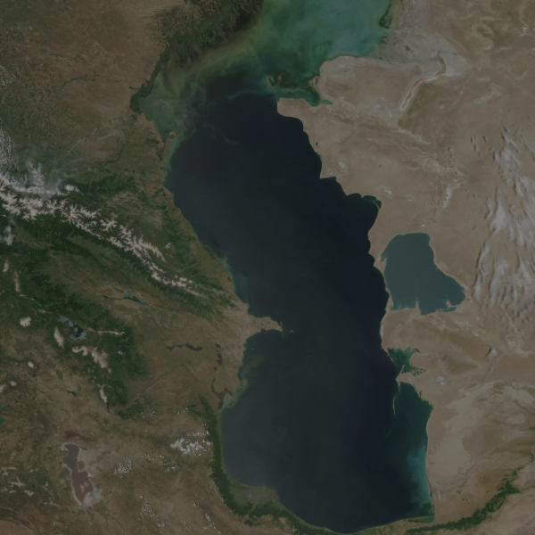
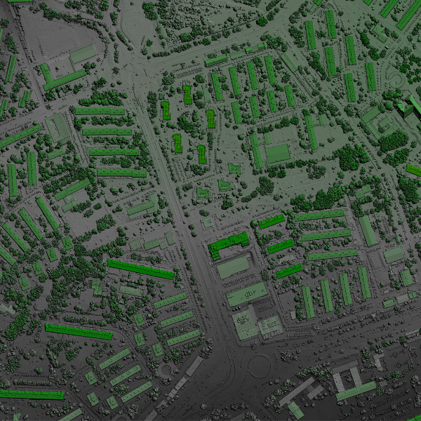
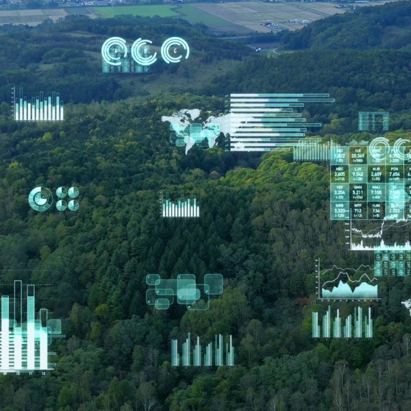

We are looking to add a highly competent and driven Remote Sensing Specialist to our vibrant team. Utilizing remote sensing technologies and techniques to gather, process, and interpret data will be your primary duty as a vital member of our geospatial team. In fields including urban planning, agriculture, and environmental monitoring, the chosen applicant will contribute to a variety of initiatives by offering insightful analysis and practical solutions.
Come explore the exciting world of GIS with us! GIS analysts are needed to work on innovative projects. In order to make meaningful decisions, a GIS analyst will examine geographical data, make perceptive maps, and work with a variety of teams. Apply right away if you're enthusiastic about innovation and GIS to contribute your abilities to our vibrant workplace!
Unlock the potential of data by becoming a member of our team as a Data Scientist! As a vital member of our analytics team, you will use your knowledge to evaluate intricate datasets, draw insightful conclusions, and promote data-driven decision-making. Apply right away to join our cutting-edge team if you have a love for turning data into workable plans.
